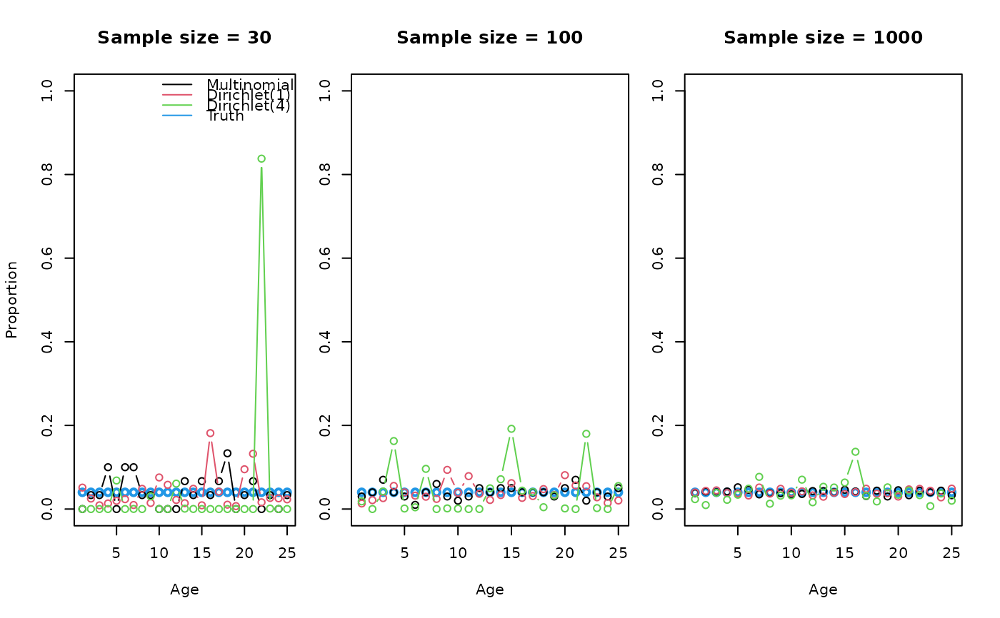

R/sample_agecomp.R
sample_agecomp.RdExtract age-composition data from a .ss_new data file and sample
the data. It is assumed that the composition data will be expected values
as written by Stock Synthesis in the second section of the data file, but
one can also sample input data. The resulting age-composition
data are assumed to represent observed age composition and will overwrite
the age data in dat_list, which is returned invisibly.
The data file can also be written to the disk, if a file path is provided to
outfile, and used as simulated data by an estimation model.
sample_agecomp(
dat_list,
outfile = NULL,
fleets,
Nsamp,
years,
cpar = 1,
ESS = NULL,
keep_conditional = TRUE,
...
)An SS data list object as read in from
SS_readdat.
Be sure to correctly specify which section of the data file you want
to work with when reading it in using the section argument.
Where, section = 1 reads in the input values used to run the model
and section = 2 reads in the expected values generated given all the
input to the OM. section = 3 is not used within ss3sim, but this
section provides bootstrapped data sets that have been sampled internally
within SS.
A character string specifying the file name to use
when writing the information to the disk. The string must include
the proper file extension. No file is written using the default value
of NULL, which leads to increased speed because writing the
file takes time and computing resources.
*A vector of integers specifying which fleets to include.
The order of the fleets pertains to the input order of other arguments.
An entry of fleets=NULL leads to zero samples for any fleet.
*A numeric list of the same length as fleets.
Either single values or vectors of the same length as the number of
years can be passed through. Single values are repeated for all
years. If no fleet collected samples, keep the value to
Nsamp=NULL.
*A list the same length as fleets giving the years as
numeric vectors. If no fleet collected samples, keep the value to
years=NULL.
A numeric value or vector the same length as
fleets controlling the variance of the Dirichlet
distribution used for sampling. A value of 1 leads to the
same standard deviation as a multinomial of the given Nsamp,
2 indicates twice, etc. Values greater than one indicate
overdispersion, and less underdispersion. NULL or NA
for a given fleet will lead to no dispersion.
The final effective sample size (ESS) associated with the
simulated data. The ESS is not used to generate the simulated data
but can be used as an input sample size in subsequent models that estimate
population parameters or status.
The default, NULL, leads to the true (internally calculated)
#' ESS being used, which is Nsamp for the multinomial case or given
by the formula under cpar for the Dirichlet case.
At least one value must be provided for each fleet or a vector of
year-specific values can be used for any given fleet.
The argument accepts a list with entries,
either a single integer or a vector of integers, for each fleet.
A logical if conditional age-at-length data
should be kept or removed entirely from the data file.
sample_agecomp only works on the age-composition data
and not on the conditional age-at-length data. To sample the
conditional data, set keep_conditional to TRUE
and use sample_calcomp().
Any argument you want to be a column in the new data frame of composition
data. All extra arguments should be named columns in data.
Each argument needs to be a list of length length(fleets). Or, you can use a
single value that will be repeated for each combination of fleet, year, ...
in your data.
A modified .dat file if !is.null(outfile). A list object
containing the modified .dat file is returned invisibly.
Other sampling functions:
clean_data(),
sample_calcomp(),
sample_catch(),
sample_discard(),
sample_index(),
sample_lcomp(),
sample_mlacomp(),
sample_wtatage()
d <- system.file("extdata", package = "ss3sim")
f_in <- file.path(d, "models", "cod-om", "codOM.dat")
dat_list <- r4ss::SS_readdat(f_in, verbose = FALSE)
## Turn off age comps by specifying fleets=NULL
test <- sample_agecomp(dat_list = dat_list, fleets = NULL)
## Generate with a smaller number of fleet taking samples
ex1 <- sample_agecomp(
dat_list = dat_list, outfile = NULL,
fleets = 2, Nsamp = list(c(10, 50)), years = list(c(26, 27))
)
NROW(ex1$agecomp) == 2
#> [1] TRUE
## Generate with varying Nsamp by year for first fleet
ex2 <- sample_agecomp(
dat_list = dat_list, outfile = NULL,
fleets = c(1, 2),
Nsamp = list(c(rep(50, 5), rep(100, 5)), 50),
years = list(seq(26, 44, 2), c(26:100))
)
## Run three cases showing Multinomial, Dirichlet(1), and over-dispersed
## Dirichlet for different levels of sample sizes
op <- graphics::par(mfrow = c(1, 3))
set.seed(1)
true <- prop.table(dat_list$agecomp[
dat_list$agecomp$FltSvy == 1 & dat_list$agecomp$Yr == 50, -(1:9)
])
cpars <- c(NA, 1, 4)
for (samplesize in c(30, 100, 1000)) {
if (samplesize > 30) graphics::par(mar = c(5.1, 1, 4.1, 2.1))
graphics::plot(dat_list$agebin_vector, true,
type = "b", ylim = c(0, 1),
col = 4, lwd = 2, xlab = "Age",
ylab = ifelse(samplesize == 30, "Proportion", ""),
main = paste("Sample size =", samplesize)
)
if (samplesize == 30) {
graphics::legend("topright",
lty = 1, col = 1:4, bty = "n",
legend = c("Multinomial", "Dirichlet(1)", "Dirichlet(4)", "Truth")
)
}
for (i in seq_along(cpars)) {
ex <- sample_agecomp(
dat_list = dat_list, outfile = NULL, fleets = 1,
Nsamp = list(samplesize), years = list(50), cpar = cpars[i]
)$agecomp
lines(dat_list$agebin_vector, prop.table(ex[1, -(1:9)]),
col = i, type = "b"
)
}
}

graphics::par(op)